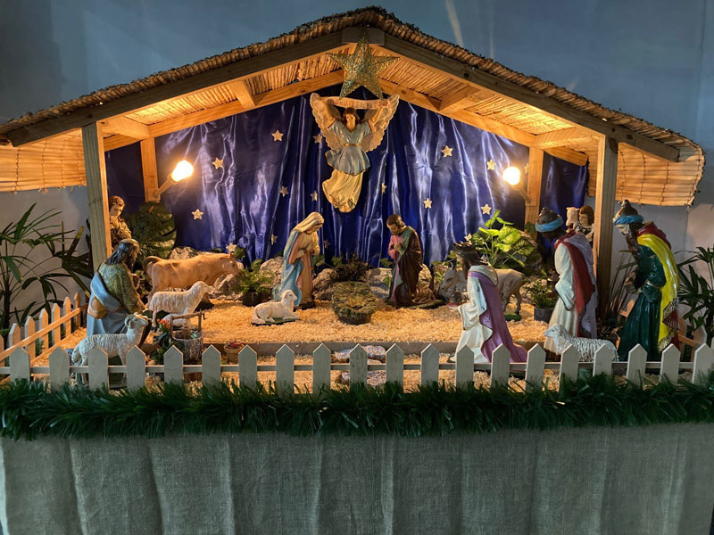
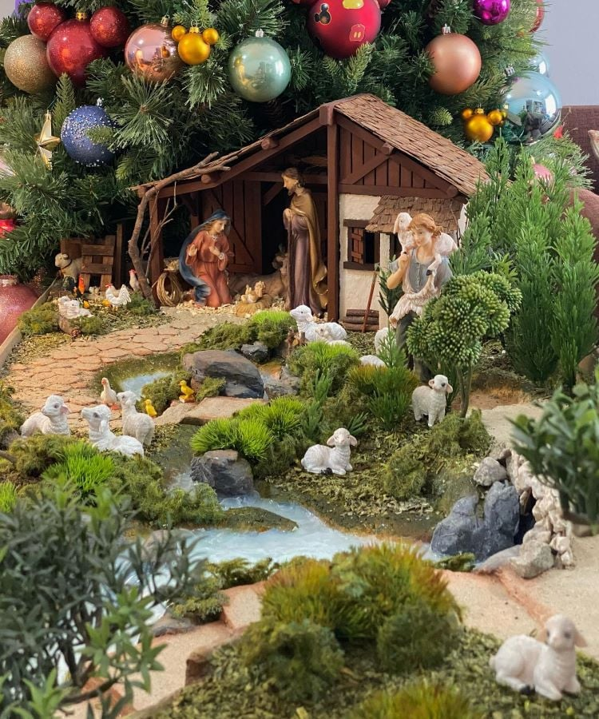
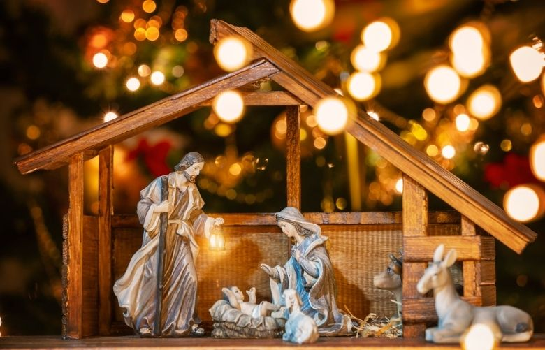

O Presépio
Presépio, na língua portuguesa, designa o local da Natividade. O presépio, todavia, é também uma referência cristã que remete para o nascimento de Jesus em Belém, na companhia de José e da Virgem Maria. Conta a Bíblia Sagrada no livro de Lucas 2,1-7 que, por motivo de recenseamento de toda a Galileia, José e a Virgem Maria foram para as imediações da Judeia, na cidade de Davi, chamada de Belém. De acordo com a mesma fonte, após o nascimento, Jesus foi envolto em panos e deitado em uma manjedoura destinada para a alimentação de animais, pois não havia lugar para eles na estalagem, e foi visitado, após o nascimento, por pastores da região, avisados por um anjo, de acordo com o livro de Lucas 2,10-16, e, uns dois anos mais tarde, não na manjedoura, mas na casa de Jesus, por Três Reis Magos vindos do oriente, guiados por uma estrela, os quais ofereceram ouro, incenso e mirra à criança, de acordo com o livro de Mateus 2,1-12.
Segundo a Bíblia, no livro de Mateus 2,13-18, estes acontecimentos ocorreram no tempo do Rei Herodes, o qual teria mandado matar todas as crianças de até 2 anos com receio de perder o seu trono para o futuro rei dos judeus.
Um costume Natalino
Tornou-se costume em várias culturas montar um presépio quando é chegada a época de Natal. Variam em tamanho, alguns em miniatura, outros em tamanho real.
O primeiro presépio do mundo teria sido feito como um cenario vivo por São Francisco de Assis em 1223. Nesse ano, em vez de festejar a noite de Natal na Igreja, como era seu hábito, o Santo fê-lo na floresta da cidade de Greccio, na Itália, para onde mandou transportar uma manjedoura, um boi e um burro, para melhor explicar o Natal às pessoas comuns, camponeses que não conseguiam entender a história do nascimento de Jesus.
O costume espalhou-se por entre as principais Catedrais, Igrejas e Mosteiros da Europa durante a Idade Média, começando a ser montado também nas casas de Reis e Nobres já durante o Renascimento. Em 1567, a Duquesa de Amalfi mandou montar um presépio que tinha 116 figuras para representar o nascimento de Jesus, a adoração dos Reis Magos e dos pastores ao Menino Jesus e o cantar dos anjos.
Foi já no Século XVIII que o costume de montar o presépio nas casas comuns se disseminou pela Europa e depois pelo mundo.
As figuras do presépio
Menino Jesus: É o filho de Deus. Foi o escolhido para ser o salvador do povo.
Virgem Maria: É a mãe do filho de Deus. Do seu ventre, nasceu Jesus Cristo.
São José: É o pai adotivo do Menino Jesus; foi um homem judeu, conhecido como carpinteiro de profissão.
Gruta ou Curral: É o local simbolizado pelo presépio. O curral era onde se guardava o gado. Por isso, no presépio, o Menino Jesus fica sobre palhas, numa manjedoura.
Manjedoura: É um lugar de aconchego onde Jesus ficou quando nasceu. É como se fosse o berço de Jesus.
Um burro, um boi, o galo e as ovelhas: Os animais representam a simplicidade do local onde Jesus nasceu. "Jesus não nasceu em palácios, nem em lugares luxuosos, mas sim no meio dos animais". O boi representa ainda a bondade e a força pacífica e ainda o povo hebreu e o sacrifício. O burro simboliza a humildade e os pagãos. O galo anuncia a chegada de Jesus numa boa nova. Já as ovelhas simbolizam além de serem os animais dos pastores querem demonstrar que Jesus veio ao mundo sacrificar-se por nós.
Anjos: Os anjos anunciam aos pastores a chegada do filho de Deus. Eles sabem que nasceu o salvador.
Pastores: Os pastores são homens do campo, que simbolizam a simplicidade do povo, já que Deus acolhe a todos sem se importar com sua condição social. Representam ainda o povo hebreu.
Estrela de Belém: A estrela de Belém é aquela que se coloca no alto da árvore de Natal. Foi ela que guiou os três Reis Magos quando Jesus Cristo nasceu.
Três Reis Magos: Os três Reis Magos - Gaspar, Baltasar e Belchior - representam os povos pagãos. Eram considerados sábios. Estes três nomes simbolizam as raças distintas, representando a universalidade da Salvação. Eles vieram do Oriente conduzidos pela estrela. Chegaram à cidade de Belém, local de nascimento do Menino Jesus, trazendo presentes: mirra, ouro e incenso. O ouro representava a realeza, a mirra era símbolo da paixão e o incenso é oferecido a Deus: representa a divindade de Jesus.
Representações
-


